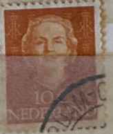
| SOURCE | TITLE| IMAGE MATCH | click to source page |
| eBay | Netherlands Postage ~ Queen Juliana ~ 6¢/10¢ Stamp (2) ~ Cancelled/Used ~ 1949 | eBay | 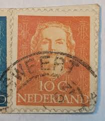 |
| Mercado Libre | 9 Timbres Del País Europeo De Países Bajos Nederland | MercadoLibre | 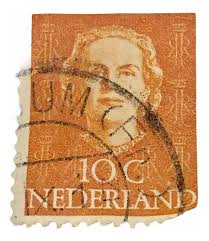 |
| Alamy | Cancelled postage stamp printed by Netherlands East Indies, that shows Numeral of Value type Vurtheim, circa 1902 Stock Photo - Alamy | 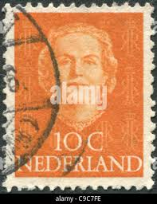 |
| HipStamp | Netherlands 308 Used Queen Juliana 1949 (BP32418) | Europe - Netherlands & Colonies, General Issue Stamp / HipStamp | 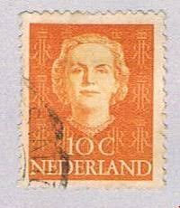 |
| Dreamstime.com | Crown Princess Victoria and King Carl XVI Gustaf Editorial Image - Image of attractive, cute: 100862975 | 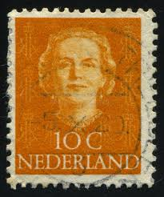 |
| eBay | Netherlands Postage ~ Queen Juliana ~ Orang 10₵ Stamp ~Cancelled ~ 1949 ~ 06 | eBay | 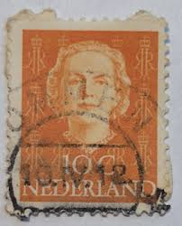 |
| Alamy | NETHERLANDS - CIRCA 1949: a stamp printed in the Netherlands shows Post Horns Entwined, 75th Anniversary of the UPU, circa 1949 Stock Photo - Alamy | 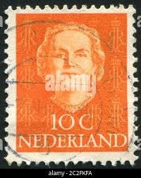 |
| Todocolección | sello usado de paises bajos de 1949- reina juli - Compra venta en todocoleccion | 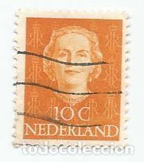 |
| eBay | Netherlands Postage ~ Queen Juliana ~ Orang 10₵ Stamp ~ Cancelled ~ 1949 ~ Z02 | eBay | 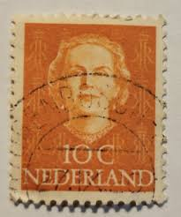 |
| eBay | Orange Royalty Used Canadian Stamps for sale | eBay | 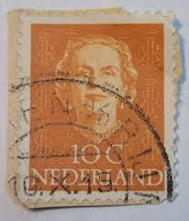 |
| eBay | Olanda 1949 Queen Juliana (1909-2004) - 10 cent | eBay | 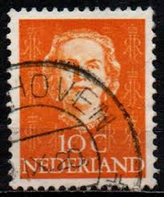 |
| LastDodo | 1949 Koningin Juliana 'En Face' (I) postzegelcatalogus - LastDodo | 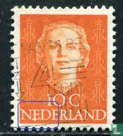 |
| Todocolección | sellos holanda, nederland, 10 cent, wilhelmina - Acquista Francobolli antichi di Paesi Bassi su todocoleccion | 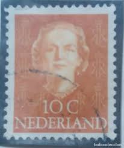 |
| Alamy | NETHERLANDS - CIRCA 1949: A stamp printed in the Netherlands shows Queen Juliana, circa 1949 Stock Photo - Alamy | 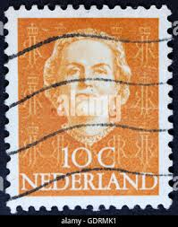 |
| eBay | Netherlands Postage ~ Queen Juliana ~ Orang 10₵ Stamp ~ Cancelled ~ 1949 ~ Z11 | eBay | 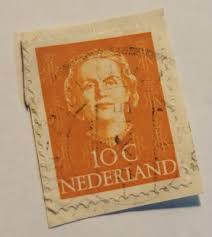 |
| HipStamp | Netherlands 1949 Sc#308, SG#686 10c Orange Queen Juliana USED. | Europe - Netherlands & Colonies, General Issue Stamp / HipStamp | 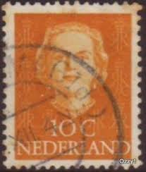 |
| eBay | Netherlands Postage ~ Queen Juliana ~ Orang 10₵ Stamp ~ Cancelled ~ 1949 ~ X100 | eBay | 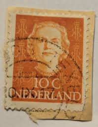 |
| Marktplaats | ≥ Vind ammers op Marktplaats - februari 2026 | 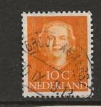 |
| alamy.de | Niederlande - um 1950: Briefmarke gedruckt in den Niederlanden zeigt die Zahl 7, um 1950 Stockfotografie - Alamy | 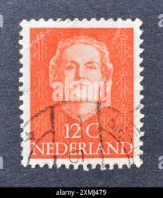 |
| Shutterstock | Netherlands 1949 10 Cents Deep Orange Stock Photo 2293922841 | Shutterstock | 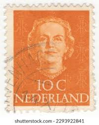 |
| Shutterstock | Crown Monogram: Over 1,045 Royalty-Free Licensable Stock Photos | Shutterstock | 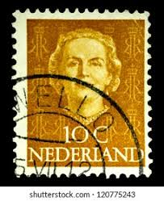 |
| Kleinanzeigen | Briefmarken | Sammeln in Deutschland | 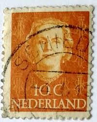 |
| allnumis.com | 45 Cent 1949, Queen Juliana - Netherlands - Stamp - 9841 | 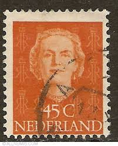 |
| 麦稀奇 | 荷兰邮票- 泡泡堂外币- 泡泡堂外币- 麦稀奇 | 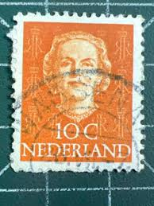 |
| Aukro | NL 1949 Mi 527 ine raz. | Aukro | 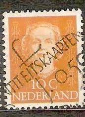 |
| Alamy | The Netherlands Antilles - Circa 1950: A stamp printed in The Netherlands Antilles shows it's value, circa 1950 Stock Photo - Alamy | 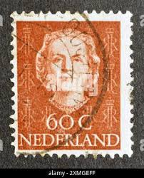 |
| eBay UK | Netherlands 1938 - Cultural & Social Welfare - Summer stamps - Portraits - Mint | eBay UK | 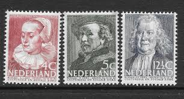 |
| 123RF | NETHERLANDS - CIRCA 1941 A 7 1 2 Cent Stamp Printed In The Netherlands, Circa 1941 Stock Photo, Picture and Royalty Free Image. Image 23508431. | 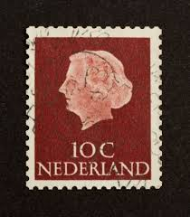 |
| PicClick IT | FRANCOBOLLO 10 CENTESIMI Nederland, Regina Juliana EUR 2,20 - PicClick IT | 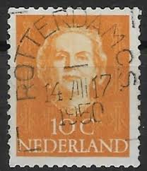 |
| eBay | Netherlands Postage ~ Queen Juliana ~ Orang 10₵ Stamp ~ Cancelled ~ 1949 ~ X86 | eBay | 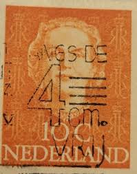 |
| Redro | Obraz Stempel drukowane w Holandii pokazuje wizerunek królowej Beatrix na wymiar • czarny, historia, sztuka • REDRO.pl | 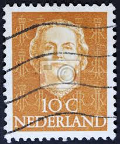 |
| eBay | Netherlands Postage ~ Queen Juliana ~ Orange 10₵ Stamp ~ Cancelled ~ 1949 ~ C08 | eBay | 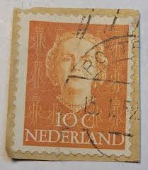 |
| eBay | Brown Royalty Used Canadian Stamps for sale | eBay | 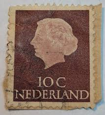 |
| eBay | Nederland 10 Cent Orange Stamp, Used, Mint | eBay | 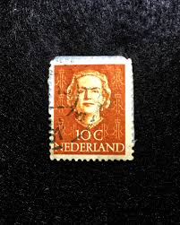 |
| eBay | VINTAGE ~ Netherlands 1949 5C Queen Juliana Stamp ~ Posted/Used ~ 01 | eBay | 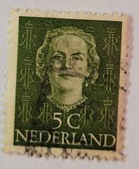 |
| alamyimages.fr | La princesse Wilhelmine, timbre-poste, Pays-Bas, 1891 Photo Stock - Alamy | 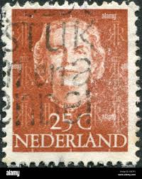 |
| PicClick UK | STAMP NETHERLANDS SG1074A 1972 60c Queen Juliana Used £0.16 - PicClick UK | 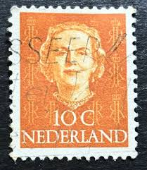 |
| ahtaunus.de | Angebote aus privater Hand - Holland - Wert 10 C | 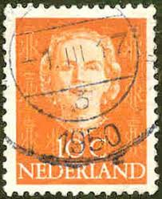 |
| Alamy | Postage stamp from netherlands depicting hi-res stock photography and images - Alamy | 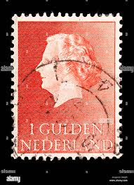 |
| ebid.net | Netherlands 1949 SG686 ne97 Queen Juliana 10c Used Stamp on eBid United Kingdom | 218932292 | 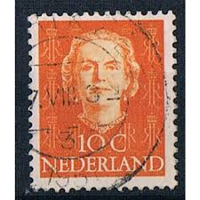 |
| Bob Shop | Netherlands & Colonies - 1954 NETHERLANDS QUEEN JULIANA was listed for 4.10 on 12 Dec at 09:16 by TROTSKIE in Cape Town (ID:629518804) | 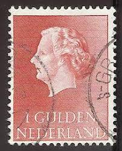 |
| eBay | Netherlands Postage ~ Queen Juliana ~ Orang 10₵ Stamp ~Cancelled ~ 1949 ~ 15 | eBay | 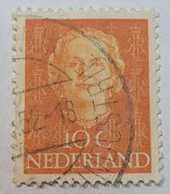 |
| Alamy | Dutch postage stamp Stock Photo - Alamy | 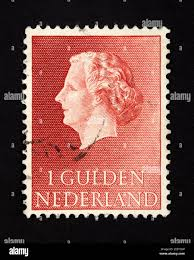 |
| eBay | 1949 Netherlands Postage Stamps Queen Juliana Orange 10 Cent Cancelled | eBay | 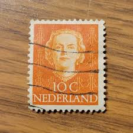 |
| eBay | Netherlands Postage ~ Queen Juliana ~ Brown 10₵ Stamp ~Cancelled/Posted ~1953-12 | eBay | 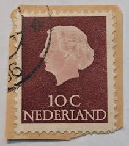 |
| eBay | Francobollo 10 Centesimi Nederland, Regina Juliana | eBay | 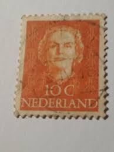 |
| Todocolección | sello holanda países bajos nederland reina juli - Compra venta en todocoleccion | 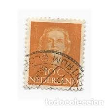 |
| PicClick AU | NETHERLANDS USED STAMP Queen Juliana Definitive 1949 Orange 10c, SG686 LOT 706 $2.10 - PicClick AU | 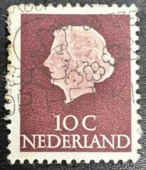 |
| eBay | Netherlands 1939, Mi: 327-31, MLH (3557) | eBay | 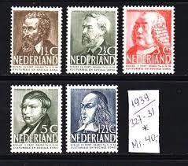 |
| eBay | Netherlands E64 Set+1v 1940 Culture Poet Painter CV 35 eur | eBay | |
| iStock | Queen Beatrix On A Dutch Stamp Stock Photo - Download Image Now - Postage Stamp, Cut Out, Portrait - iStock | |
| Freestampcatalogue.com | Stamps with the theme Vincent Van Gogh - Freestampcatalogue.com - The free online stampcatalogue with over 500.000 stamps listed. | |
| Is a stamp with a complete cancellation worthless? | ||
| eBay | Nederland Foreign 10c Brown Stamp Used - #A261 | eBay | |
| Shutterstock | 2+ Hundred Hague Stamps Royalty-Free Images, Stock Photos & Pictures | Shutterstock | |
| eBay | Phila Nippon,World Stamp Exhibition,Art,Painting,Folkways,Japan 2011 FDC,Cover | eBay | |
| Marktplaats | ≥ Van Riebeeck Postzegels en Munten Te Koop | Marktplaats | |
| Shutterstock | Netherlands Stamp: Over 6,835 Royalty-Free Licensable Stock Photos | Shutterstock | |
| eBay | Netherlands Postage ~ Queen Juliana ~ Orang 10₵ Stamp ~Cancelled ~ 1949 ~ 11 | eBay |